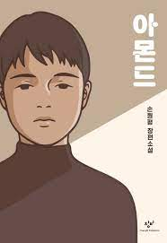

아몬드

감정 표현 불능증을 앓고 있는 열여섯 살 소년 선윤재. ‘아몬드’라 불리는 편도체가 작아 분노도 공포도 잘 느끼지 못하는 그는 타고난 침착성, 엄마와 할머니의 지극한 사랑 덕에 별 탈 없이 지냈지만 크리스마스이브이던 열여섯 번째 생일날 벌어진 비극적인 사고로 가족을 잃는다. 그렇게 세상에 홀로 남겨진 윤재 앞에 ‘곤이’가 나타난다. 놀이동산에서 엄마의 손을 잠깐 놓은 사이 사라진 후 13년 만에 가족의 품으로 돌아오게 된 곤이는 분노로 가득 찬 아이다. 곤이는 윤재를 괴롭히고 윤재에게 화를 쏟아 내지만, 감정의 동요가 없는 윤재 앞에서 오히려 쩔쩔매고 만다. 그 후 두 소년은 남들이 이해할 수 없는 특별한 우정을 쌓아가고, 윤재는 조금씩 내면의 변화를 겪는데…….